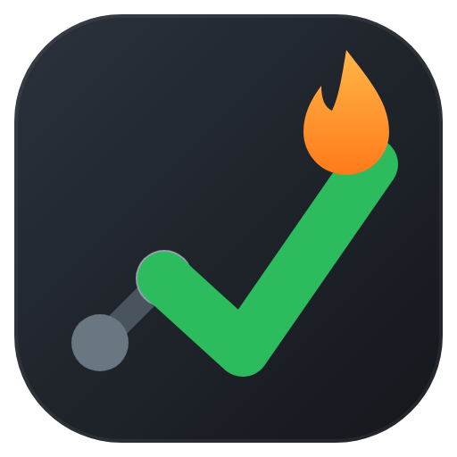

Grindlog auto-pushes every accepted LeetCode solution to your GitHub — with the problem statement, stats, attempts and streaks. Every approach kept, nothing ever overwritten.
Add to Chrome — it's free No account. No servers. Your code goes straight from your browser to your repo.// 3121. Count the Number of Special Characters II [Medium] // Topics: Hash Table, String // Runtime: 21 ms (beats 58.65%) | Memory: 48.27 MB (beats 38.05%) // Solved in 24 min after 2 failed attempts // Daily Challenge (2026-07-12) 🔥 class Solution { public int numberOfSpecialChars(String word) { ... } }
Resubmitting adds a new timestamped file. Your brute force and your optimized solution live side by side — the whole journey, not just the last answer.
Auto-generated dashboard: solved counts, streak, average attempts, per-topic index. Recruiters see a habit, not a code dump.
Problem statement, difficulty, topics and hints in each folder's README; runtime, memory and beats-% in every file header.
Grindlog counts your failed attempts and time-to-solve. "Solved in 24 min after 2 failed attempts" tells you what to revise.
One click imports every past accepted submission — your repo starts full, not empty.
Your token stays in Chrome storage and talks only to GitHub's API. No middleman, no analytics, no account. Privacy policy.
The welcome page walks you through everything.
Create a repo and a fine-grained token scoped to just that repo. Paste both in — done.
Hit Submit on LeetCode. On Accepted, Grindlog commits. That's the whole workflow.
It's stored in Chrome's extension storage on your machine and is only ever sent to api.github.com. Scope it to a single repo with Contents permission and it can't touch anything else. There is no Grindlog server.
No — only accepted submissions are pushed. Failed attempts are just counted (the code is discarded) so your headers can show how hard a problem fought back.
It's queued and retried automatically every few minutes. The extension badge shows the pending count.
All LeetCode languages — correct file extensions and comment syntax for each (Java, Python, C++, Go, Rust, TypeScript, SQL, and the rest).
No. Grindlog is an independent open-source project and is not affiliated with or endorsed by LeetCode.